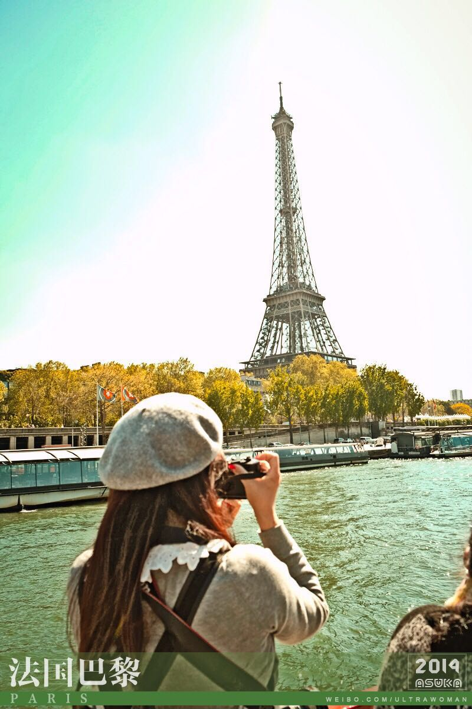
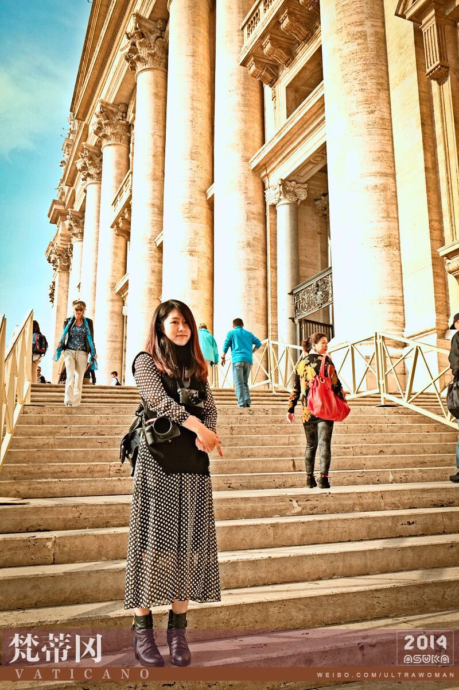

正文: 在知乎这样一个社区里，决定了进来回答问题的女性有一定的追求，对智知上的提升有热爱，有一定的逻辑思考能力，所以这样的姑娘在婚姻上我想基本都会和答主一样比较追求精神层面的契合。
而我最近看到一篇网文《结婚这件人生小事》颇为认可（结婚这件人生小事 豆瓣一刻20150831_我爱热可乐 作者：杨时旸 侵删），遂转发给母上大人意为平息她老人家的焦虑之心，其中的一段文字我极为认可：
结婚，一定是两个成年人的事，不是法律意义上的年龄的成年，而是心理层面的成年。和法律规定不同，心理成熟每个人因人而异，有人三十岁仍然是个孩子，这一点都不夸张。成年人的意涵包括，经济独立，精神自立，知道为人处世时的平和，也懂得维护内心的个性，精神内里的边界稳固，有稳定的价值观，懂得享受自由同时明白自律，知道对他人的宽容，对于自己厌恶的人和事，会用合适和体面的方式拒绝；对于热爱的东西，知道自己努力获取而不是要求别人为自己买单。这样的人就不会太差。但仔细看看周围，真的能符合这些的又有多少？
中国的文化和教育系统，形成了一个灾难性的后果，就是从少年到青春期，从父母、学校到社会都拼命压抑一个人成为成年人的一切征兆，无论精神上的规训还是身体层面的禁欲，都是如此。但达到一个大众认可的适婚年龄，他们又马上被催熟，仿若一夜之间，他们就必须成为一个精神上成熟，又具备责任感的男女，这又怎么可能呢？
某种程度上说，中国婚姻关系中的很多灾难性的结局，都是这样的病灶的后遗症。他们还未能成熟，就被推进了一段需要成熟的心智才能达成的人际关系中。更深层的精神层面的训练姑且不提，说说最实际的生活，除了北上广这几个特殊的移民城市，其他大多数城市中，绝大多数年轻人都缺乏一段独自生活的经历。他们从原生家庭直接过渡到二人家庭，但独自生活，试错，寻觅，自我矫正，与真实世界独自交手的过程无比重要，几近必须，可这段生活被人为地彻底删除了。有时是因为经济原因，有时是因为中国特有的将成年人孩童化的压抑原则。原生家庭亲手造就了某些悲剧的根源。让年轻人没经历过真正拔节生长的过程，就被丢进了婚姻。某种程度上说，很多中国式婚姻的悲剧，都是两个孩子过家家，不是两个成年人过日子。
非常感谢我的父母，在这个房价尚停留在千元的二线山区城市将我的嫁妆置换成了一套小小的 写着我名字的二手房。所以在拥有自己独立住所后，我一个人静静居住于此。
刚一开始，下班后如果没有朋友邀约吃饭玩耍，我就会感到极大的空虚！！
作为一个从小在父母身边长大的人，我非常恐惧一个人回到空无一人的家里，觉得一个人安静呆在家里是件非常……孤独的事。我不停的约朋友吃饭聊天，害怕自己是孤立的、无价值的。可是渐渐的，我知道了，不管在外面和朋友玩到多晚，总归还是要一个人回到家里的。
所以安静的躺在床上，我一次次问自己为什么……
为什么只有我是自己一个人……
我不比其他人差，为什么只有我没有恋人？
我的恋爱观或是婚姻观出了什么差错？
反观我身边那些结了婚的好友，她的恋爱观和我有什么不一样的地方？
而那些还没有结婚的朋友，她们又与我有哪些相似之处……
我发现是不是我们这些晚婚者都出了错？
所以我是不是应该调整自己？
我相信回答这个问题的很多小伙伴们一定和我有过相似的经历……
面对着四面墙，我感觉到无法排解的孤独、苦恼、自我怀疑……有时有会有一定程度的自我否定，有时比较自负，有时又非常的悲观，而且这种悲观无法向人倾诉，毕竟在生活中我一直表现出的是个比较逗逼开朗的人，所以我也非常害怕暴露出这种悲观情绪遭人嘲笑……以至于有一段时间我怀疑我患上了忧郁症，在知乎上查过很多次忧郁症的症状，一度甚至考虑过要不要去找心理医生（只是想想）。
所幸这样极为苦闷的日子并没有持续太久，在不愿对外人倾述也不能与家人排解（事实上还要承受一部分家里的忧虑），我必须寻找自我解脱之道。在这里我也和小伙伴们一起分享心得。
- 运动，看书，看知乎，烤蛋糕，认真做早餐，摄影，与同类聊天相互安慰，工作（获得自我价值认同）加班接私活（挣外快）……是我行动上采取的方式。
- 自省，和情绪为伴，尝试站在第三者的角度去感知自己每一次情绪上的波动，分析这些情绪的本源，坦然面对自己弱点（试试想王小波说的那句人类的一切愤怒本质上都源自于自己无能的表现！坦然面对自己某些方面的无能，原谅自己。原谅自己。原谅自己。重要的话说三遍），坦然承认自己最深层次的需求（精神层面需求），以及佛教与心学的学习实践……是我在认知上的方式。
- 最有效的方式：运动。 在悲观情绪袭来时，我会立即开始健身，从瑜伽到跳舞，运动方式不一，这样做有几点好处：
- 1、能立即找到关注点忘却烦恼。
- 2、运动完之后多巴胺和内腓肽的分泌能显著改善情绪。
- 3、获得好身材，秀朋友圈，获得朋友们的赞美非常有助于保持自信。
- 4、能认识很多各年龄层面的优秀同性朋友，当你看到那些努力姐姐们不管三十岁、四十岁、五十岁依然和你一起在运动馆里挥汗如雨，她们脸上洋溢的都是自信美丽的笑容，会非常能帮助改善对于年纪大=衰老 这件事的恐惧。
- 自我学习的良好方式：看书看知乎，永远不放弃自我学习，自我进化。从小作为教师的父母严格禁止我看电视，因此看剧对我毫无吸引力，我每年会统计看过的书，去年看了34本，今年比较闲，到目前为止看了31本，到年底应该可以看40本，我看故事类的比较少，比较喜欢科幻类、或是能让自己学习与成长的。知乎也非常棒，作为一个独生子女，我在这里找到了很多同类，他\她们或睿智、或幽默、或机智，非常有乐趣，现在遇到问题第一件事就是到知乎上先搜一下解决办法。
- 可考虑成为特长的方式：学会烤生日蛋糕。我觉得女孩子尤其可以加一下做生日蛋糕这个技能！自从学会了做蛋糕，天了噜，社交值简直提升了一倍，朋友聚会、生日，也不用烦恼送什么礼物了，提一个用铁塔、总统和新鲜时令水果做的生日蛋糕既能体现自己的心意也能和小伙伴们从此吃上健康美味的蛋糕，成就感秒爆棚有！木！有！
- 认真做好每一天的早餐。一早吃一餐好的不仅提升人的幸福感，还能使一整天的饮食控制能力加强。被自己做的早餐香cry 是一种怎样的体验？我在这里回答过这个问题
- 永远保持工作热情。我觉得女性也应该保有职业精神！忘却性别只将自己做为一个职业人来看看待，被动或主动获得智知上的提升，不与时代脱节，同时收入提高生活富足，我认真想过如果真的感情不顺利会怎么办，还好现在的社会允许女性参加工作，工作让女性除了感情生活还拥有了其他的选择权利。
- 最最重要的能力：感知自我情绪，学会自我安慰，自我释放。具体方法可以看这里http://www.zhihu.com/question/25365330/answer/31007326 里面答主提到了自我意识，或称自我监视：关注自己的头脑思维和情绪。唯有一个意识到问题存在的人才能进步，这是通往成熟和自我完善的门，而自我意识就是这扇门的钥匙。 在独自生活的过程中，我有很多的时间将精力关注到自己的情绪波动上，为何高兴，为何难过，为何孤单，为何嫉妒，为何愤怒…… 再进一步分解这些情绪，自我剖析情绪的根源，对于客观不能改变的部分坦然接受，学会自我安慰、不自责，对于主观可以改善的，立即行动起来！然后坦然接受结果，放下情绪拥抱自我。最终应该真正认知到，这一切的努力是因为我爱生活爱自己，并不是为了未来的伴侣这么做的，我做这些是为了自己，对，就算是要找伴侣也是因为我！要！找！ 学会真诚的对待自己、清晰描述自我感觉…… 还有就是学会换位思考，做到这些后能较少发脾气，因为你会知道为什么这个人会这么说，为什么那么做，也能更快察觉自己的情绪流动，消除对未知的恐惧感以及摆脱情绪的控制。
一位女性如何独立且有趣的生活？
我在认真研究了知乎上各类贴子后，决定一个人也要充实自己的生活。
首先就是，我把房子装修成了自己喜欢的样子。
我先是SU里建了模
然后结合自己喜欢的地中海风，在淘宝上淘了很多便宜又能体现地中海风的装饰品。
同时，本着最经济实惠的态度，我认为直接刷一面墙最提气，所以我选定了自己喜欢的深蓝色，买漆时请室内设计师的朋友带我去电脑调色（会贵一点，但颜色能最大限度接近你所需要的色度）。记得刷漆那天，漆工大叔反复问我决定好了么，这么深的颜色他从没见过哪家刷在内墙上，而已刷上去之后任何颜色都盖不了的。我哈哈大笑，我的房子，我自己出的钱，我要刷什么颜色就是什么颜色，师傅您请快点儿吧。
自己一个人去窗帘市场配了同色系窗帘，米字旗沙发巾，米字旗的地毯（事实证明，地毯太不好打扫了，至少我觉得可以不买），在淘宝上选购了好看的吊灯和落地灯……这些都没有一个超过500块钱。

对了，我还研究了知乎上大家推荐的有什么相逢恨晚的东西的那个贴子。
我买了天竺棉的床上四件套，真的好好睡啊！！！爱死了，从此只睡天竺棉！！！
还买了无印良品的香薰机，精油是去泰国玩的时候自己选的非常贵的一款，每次一打开，心情超美好。
还买了电动牙刷，飞利浦的…………（欧乐B 600+那款比飞利浦的好）
机械键盘我买了樱桃牌的红轴~~ 一直好想试试响亮滴青轴！
我认为人最应该营造得舒适的地方就是自己的卧室，我喜欢在卧室里摆一些香熏的精油（泰国购，味道很美好）。
入夜，打开台灯，点上香薰蜡烛，放一首后摇，看一本好书或是喝一点小酒，带点微醺~ 躺在舒适的床上，人生尽享温柔夜，服侍自己好一点，很有必要！！≧▽≦
养了只猫，我不想回家后因为没有人聊天而让家里气氛低迷（有了猫，好歹你能和猫自言自语的对话），真的，很有用！！！
猫，是我见过的最好饲养的家庭宠物！！
对了，我的猫是去领养的，领养的时候挺大的了，不过我觉得，完，全，无，所，谓！大猫比较没有小猫调皮，猫的性格非常随机的，流浪猫因为吃过苦，有时候反而会非常听话，至少我家猫就比较像狗，不管我在家里哪里叫它，它都能喵喵回应着我跑来……而且有时有不想去的应酬时就可以说： 我要回家喂猫去了。
猫粮我除了巅峰没买过，其他都试过，最喜欢的是GO！ ，现在喂的牛油果，罐头隔几天开一个。猫很快就被我喂得非常肥美了（哈哈哈，什么破比喻呀），很多第一次见到我家猫的朋友都不相信它当初是只长着猫癣，眼睛都睁不开，脸上还有被狗咬过的伤口的流浪猫呀……所以也想呼吁一下大家： #选择领养，选择买不到的爱#
春节期间还在朋友的屠刀下解救了一只刺猬，多方打听，应为冬眠时被山民所抓的，所以开春后放生了。刺猬好臭啊，哈哈哈。(≧o≦)
有时也喂喂楼下的流浪猫，和它们做朋友。╮(╯3╰)╭
阅读，音乐是我精神上最大的享受，即便去法国旅游时作为名优土特产买来的LV包，对我而言也就是个装东西的……而已╮(╯▽╰)╭，愉悦感远远比不上看十本好书、听十首好歌，在知乎上看十个好贴子来得强烈。音响我特别爱BOSE的MINI随身蓝牙音响，每晚伴着音乐看书是我人生一大享受。
换一个大电视（虽然我不怎么看电视），可是客厅气势一下子就被提起来了。别信什么电视机尺寸和客厅的比例，就照着你能买的最大号买，不会错。 (￣y▽￣)（女孩子一个人在家，请工人来装修，记得在门口放一双男士拖鞋。而心机如答主，期间工人一直在搭讪，还假装与不存在的空气男友通了电话。女孩子一个人住，警惕一点总不会错。）
嗯，我还买了烤箱，就是非常平民的长帝的25B，照着下厨房上面的方子，用烤箱烤了很多很多的蛋糕饼干……开发出了自己的厨艺技能，各种蛋糕饼干披萨意面上手就能成功，想吃啥就自己做啥吃，现在不时还有朋友在我这里买蛋糕给家人。
认真做好早餐，认真开始每一天的生活。


给爱吃桃酥的妈妈做健康版桃酥。
中秋节做点儿云腿月饼，自己吃家人吃也送朋友。(≖ ‿ ≖)✧
年底了，请几位玩得好的同事（包括领导）吃吃烤羊腿。和同事们增进合作感情，也向领导汇报汇报思想心得。(→_→) （我们领导是女的！ 女！ 的！）

因为我爱健身，所以自己翻书+琢磨，自己做健身能量棒，随身带着健身前两小时吃。
还能送给朋友，增加自己的友好度。
给爱吃糖的小侄女做牛轧糖。
时不时请朋友们来家里聚餐，大家一起喝酒聊天，一醉诉衷肠。
也去过国外吃过三星米其林。嗨，也就那样吧，回来我就快忘了味了。（没错，就是个喜欢路边摊的命，哇啦啦啦 (￣ε( ￣)）

没事的话，可以学习一下简单的调酒。
与姐妹党相约去泡温泉。
去听音乐剧、话剧，为艺术的美好感动。
有空抄抄经。
也尝试自己种点花花草草（失败鸟~ ノへ￣、 ）
下班看到有花卖，买一束吧，女孩子的家里，就应该是香香的。
还有就是我一直以来最为坚持的摄影与旅游，目前我使用的相机是徕卡的M7胶片相机，虽然我也有5D2，但这几年更喜欢胶片相机，它能让我慢下来，用心的好好拍，而且我喜欢胶片摄影的不确定性，你永远不知道这一快门按下去会不会如你所愿的成像，一如人生，努力并接受就好。旅游已去了17个国家了，还在刷新中……


不时也给身边的闺蜜们拍拍照，然后你就会发现女人缘不要太高哦！！ 嚯嚯嚯~
（对不起，我一直努力不要看上去太逗逼。 有点快控制不住了）(＞д＜)
对了，还有瑜伽，我从大学就开始练习，一直没有停过，因为楼下就是瑜伽馆，每天下班没事我都会练一节瑜伽，然后冲凉后慢悠悠回家。目前正在努力练习拿瑜伽教练证的过程中……有事没事就爱在朋友圈秀秀胸……秀秀倒立……秀秀马甲线……哇嘎嘎，对不起，毕竟 #这个逼我装定了# ╮（╯＿╰）╭
各种体育运动我都不排斥，舞蹈是我最近的最爱。爵士、街舞、肚皮舞，统统爱爱爱……
参加健身房塑身减脂营，学习科学合理的运动健身。没错，朋友们身边的健 身 小 顾 问就是我！！╮(╯▽╰)╭
定期参加身心灵疗育的课程，了解作为女生的身体，关爱自己的身体。同时也在老师的带领下释放负面情绪，让自己更加乐观更加积极的面对生活。
也要偶尔抱（xiu）怨（xiu）工作，别让别人觉得一天到晚就在玩玩玩，女孩子多少还是要有点脑子。
时不时逗逼，自我调侃自嘲一下，活得轻松一点，别紧绷绷的。哈哈哈 (￣y▽￣)~*

我很高兴我在一个人的独居生活中真正学会了和自己相处，借由独处的时光，我通过不停的学习与思考，想清楚了自己以后应该成为什么样的人……
我很爱现在的自己，有爱人没有爱人对我来说已不再是非常苦恼的事，实际上我已学会与自己的情绪作伴，并深刻认识到自己是什么样的女性，自己需要的是什么样的男性……
我觉得自己很棒，借由自我不断的努力，会继续活成自己期待的样子。
为哈还没收到邀请去回答作为一位逗逼是什么样的体验呢~ 唉，好遗憾！